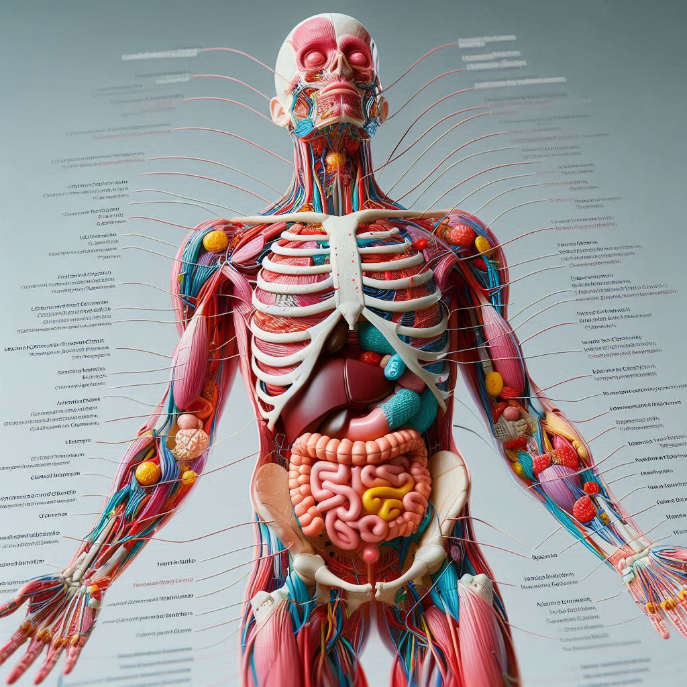
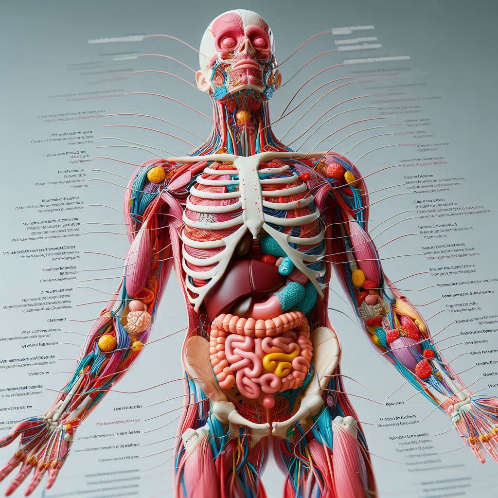

HealthSphere

.png)

 

Es el estudio científico de funciones y mecanismos en un sistema vivo. Como subdisciplina de la biología, la fisiología se centr a en cómo los organismos, los sistemas de órganos, los órganos individuales, las células y las biomoléculas. Para el funcionamiento fisiológico son fundamentales los procesos biofísicos y bioquímicos, los mecanismos de control homeostático y la comunicación entre las células. La fisiología agrupa los procesos que estudia en funciones principales que son: Funciones nutricionales Función reproductiva Funciones de relación: locomoción y funciones sensoriales
Es un proceso en cual se busca encontrar un punto de control de la temperatura, el cual se debe mantener estable para el correcto funcionamiento del cuerpo humano. Este proceso se lleva a acabo a partir de un regulador y efector. Todo esto con el fin de encontrar un punto de equilibro, que consiga mantener la temperatura en 37°c, debido a que esta es la temperatura promedio para el correcto funcionamiento del cuerpo, una temperatura mayor implicaría consecuencias en diferentes sistemas del cuerpo, junto con un desgaste de sistemas importantes del cuerpo, debido a que no pueden poder realizar sus funciones de la manera correcta. Un claro ejemplo de esto lo podemos ver en una habitación, la cual contará con una temperatura un poco elevado y poco agradable para el cuerpo; si se prende un aire acondicionado en esta habitación, con el pasar de unos efímeros momentos, la temperatura habrá disminuido en la habitación. Esto mismo ocurre con el cuerpo humano para poder regularlo, pero para esto se usa un sensor, el cual tiene conexión con el SN y el SNP para poder transferir los estímulos y sensaciones del cuerpo, todo esto para poder conseguir la solución a los diferentes problemas que el cuerpo posea y activar mecanismos que puedan evitar el daño tanto temporal como permanente de alguna zona en específico. Logrando así preservar áreas o partes fundamentales en el cuerpo, las cuales juegan un papel fundamental en el mismo. En todo este proceso vemos diferentes mecanismos de control del cuerpo, en estos mimos vemos la retroalimentación positiva y negativa de los diferentes aspectos o sucesos ocurridos. El método de regulación el cuerpo lo vemos de manera directa con el sudor y escalofríos constantes para poder conseguir la disminución significativa de la temperatura del cuerpo. Evitando así el daño irreversible. La homeostasis, tiene dos categorías para poder lograr la regulación de la temperatura. Esto se logra mediante las glándulas endocrinas (sistema endocrino), todo por medio de mecanismos intrínsecos y extrínsecos. El método que se utiliza para poder llegar a realizar de manera efectiva este proceso, es mediante la secreción de hormonas por las glándulas endocrinas, por lo cual se efectúa el proceso cuando todo esto llega al torrente sanguíneo, específicamente a los glóbulos rojos.
El tejido muscular, perteneciente al sistema muscular, es un tejido de vital importancia en el cuerpo humano, ya que realiza diferentes acciones que permiten un correcto funcionamiento del cuerpo humano. El tejido muscular está compuesto por: tejido liso, cardiaco y esquelético.
Este tejido está compuesto por huesos que a su vez se unen por tendones, los cuales, al hacer un movimiento, logran mover una Parte del esqueleto, esta función o movimiento no se ve en la parte de la faringe, el diafragma y la parte superior de la lengua. Estas tes están compuestas por tejido esquelético, sin embargo, no producen un movimiento conciso en el sistema óseo.
Este músculo se encuentra únicamente en el corazón, en donde se difiere del músculo esquelético, donde las células miocárdicas son cortas, ramificadas y están interconectadas para formar un tejido continuo. En este punto, vemos la ramificación de células adyacentes (interconectadas) que se unen, generando así unos discos intercalados que se tornan de color negro.
Este tejido lo vemos como un tejido que recubre el tubo digestivo, así como vías respiratorias de menor tamaño, también lo vemos en las vías urinarias.
El tejido nervioso es el tejido más importante, ya que pertenece al SN (sistema nervioso), este tejido cuenta con varias características, como serian que su función es el transporte de estímulos y sensaciones nerviosas, así como impulsos eléctricos. Debido a que pertenece al sistema más importante del cuerpo humano, este tejido es de vital importancia para poder realizar diferentes acciones de la vida diaria o acciones que nos pueden salvar la vida. Vemos en este caso como por medio de los axones, los cuales transportan los impulsos nerviosos generados por las vías somáticas, motoras y sensitivas (6 vías), las cuales se encargan de generar o transmitir la información generada y transformar los impulsos eléctricos. Todo este proceso se lleva a cabo por medio del SNP y SNPA, adicional a esto vemos como la vaina de mielina sirve como un propulsor para que los axones puedan transportar de forma eficaz y mucho más veloz, la información generada por las vías, ya sean aferentes o eferentes.
Este tejido cuanta con una característica específica, la cual es que vemos el sistema endocrino (segundo sistema más importante del cuerpo humano), donde las células se unen formando membranas que recubren superficie corporal. En este punto vemos dos derivaciones de glándulas, las exocrinas, que secretan sustancias químicas a través de estás glándulas hacia el exterior, específicamente hacia la parte corporal del cuerpo. Por otra parte, vemos las glándulas endocrinas, que secretan sustancias químicas, que son específicamente hormonas que se segregan en la sangre.
Adentrándonos en el tejido epitelial, vemos las membranas epiteliales, las cuales son un conjunto de células que recubren glándulas o que están como un medio de protección entre el ambiente interno y externo. Este tejido se forma debido a una acumulación de células que forman capas, en donde los tejidos simples están formados por una capa, en cambio los que se forman por varias capas, se les denomina membrana estratificada. Las células epiteliales con forma aplanada son escamosas, aquellas cuya anchura y altura son iguales son cúbicas y las que son más altas que anchas son cilíndricas. La importancia de esta radica en el recubrimiento de partes internas y externas, como es el caso de los pulmones, en donde vemos la función de esta capa a la hora de transportar el oxígeno y efectuar la expulsión del dióxido de carbono, logrando así la oxigenación de la sangre.
Son derivaciones de las membranas epiteliales. A diferencia de las glándulas endocrinas, las glándulas exocrinas si secretan sustancia en la superficie del cuerpo humano, debido a que posee conductos que le permite realizar estas secreciones. Las secreciones se dan a través de conductos ramificados (como se observa en la figura 1-16). Las secreciones de estas glándulas varían, dependiendo de la regulación neural y endocrina. Podemos apreciar un claro ejemplo de la manera en la cual se realiza la secreción, estos conductos, los vemos presentes en glándulas lagrimales, sebáceas y sudoríparas. En las glándulas sudoríparas, el proceso de secreción varia un poco, debido a que se realiza la secreción diluida en una mezcla de solución salina o suero fisiológico, esto se hace para realizar el proceso de termorregulación del cual se habló anteriormente, esta secreción puede tener un determinado olor debido a la disolución que vemos y por esto da el característico olor a sudor.
El tejido conjuntico (o conectivo) está compuesto en su mayoría por un material extracelular, esto junto otro tipo de material. Vemos 4 tipos de variaciones en el material extracelular: 1- Tejido conjuntivo, 2- Cartílago, 3- Hueso y finalmente, 4- sangre. La sangre entra en estos cuatro tipos debido a que en su mayoría se compone con este tipo de materia. Estos tejidos se dividen en subtipos: tejido conjuntivo laxo, fibras colagenosas, las cuales se dispersan y proporciona o permiten un conjunto bastante grande de vasos sanguíneos. Tejidos conjuntivos regulares densos, son aquellas en las que las fibras colagenosas están paralelas entre sí, dejando poco espacio para materia extracelular fundamental. Y los tejidos conjuntivos irregulares densos.
Es un tipo especializado de tejido conjuntivo laxo. En cada célula adiposa, el citoplasma está estirado alrededor del glóbulo central de grasa. La síntesis y desintegración de grasas se realiza con enzimas especializadas dentro del citoplasma de los adipocitos.
Es un tipo de tejido de sostén y protector. Esta rodea todas las articulaciones que presenten algún movimiento. El hueso es una formación de calcificada alrededor de los vasos sanguíneos, estos se nutren por medio de cordones umbilicales que conectan los citoplasmas.